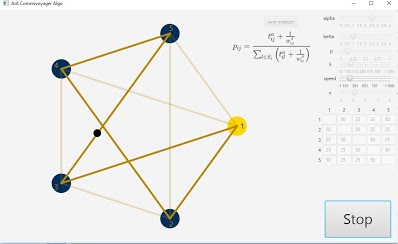
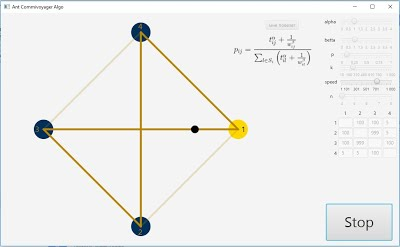
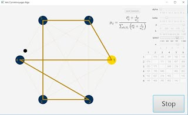
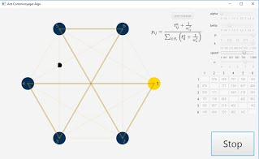
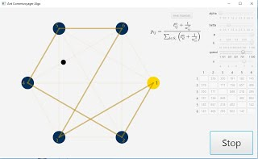

- Операционная система: Windows
- Необходимые пакеты: Java SE Runtime Environment
-
Как уже говорилось, коэффициент α отвечает за феромоны. Чем больше коэффициент, тем сильнее муравьи реагируют на запахи, которые оставили их собратья. Если задать этот коэффициент = 0, то муравьи лишатся своего главного приспособления, и будут выбирать с большей вероятностью более короткие пути (конечно, если коэффициент β отличен от нуля. В таком случае, вероятность перехода в любой город будет одинакова).
На практике, достаточно установить α в 1 и за редким исключением корректировать, отталкиваясь от β.
При слишком больших α, увеличивается вероятность "зацепиться" за псевдорешение, потому как муравьи начнут очень быстро и сильно реагировать на изменение карты феромонов еще до того, как она стабилизируется, начав показывать разумную картину. Пример 1. Трусливые муравьи
В примере 1 показан как раз такой случай: оптимальный путь расположен на звезде, но тк в самом начале вероятности выбора городов примерно равны при заданных константах, муравей спокойно выбрал не самый оптимальный путь. Но это была бы не особо значимая беда, если бы остальные муравьи не так сильно реагировали на феромоны. А при нашем коэффициенте α, они сразу зацепились за не самый оптимальный путь, и уже вряд ли его изменят. Я называю таких муравьев трусливыми, тк они редко выходят из зоны комфорта, выбирая пути, по которым не ходила их колония.
-
Коэффициент β отвечает за приоритет более коротких путей. Соответственно, чем выше β, тем больше муравьи ориентируются не на путь в целом, а на выбор города исходя из того, в какой быстрее попасть. Очень странная константа, по моему мнению. Она может помочь только в частных случаях для дооптимизации пути. Еще познавая теорию о муравьиных алгоритмах, я не понимал ее необходимость. А теперь, проведя множество тестов, я могу с уверенностью сказать, что в данной задаче - это абсолютно бесполезная константа. Скажем, нам не важно, короткая или длинная дорога будет в первый город, мы хотим сэкономить на всем пути. А за это отвечает сумма всех дорог, и нам не важно, какая по счету была самой короткой, а какая самой длинной. Собственно, от всего пути и зависит обновление феромонов после того, как муравей добрался до первого города.
Пример 2. Бетта эффект
На этом примере я демонстрирую, как ужасно на решении задачи может сказываться даже небольшое значение коэффициента β. Оптимальный путь здесь
1-3-4-2-1 = 305, но тк из города 1 до города 4, путь равен 5, а в остальные города 100, муравей с огромной вероятностью выбирает именно его. Та же ситуация с выбором следующего города: 4-2. А затем у муравья не остается вариантов, кроме как заплатить штраф, пройдя по дороге 2-3 с расстоянием 999. В итоге получаем: 1-4-2-3-1 = 1109. Явно больше, чем 305. А ведь начало было таким многообещающим...
ожно задать остальные константы, чтобы эта проблема решалась, но мы просто избавимся от деффекта бетта, когда можно его просто не создавать. -
Коэффициент затухания феромонов P. Этот коэффициент играет роль не щадящего ничьи запахи времени. Как правило, его значение должно быть приближенно к нулю либо ему равняться. Нулевое значение учитывает опыт всей колонии и позволяет получать более объективную картину, увеличенное значение позволяет быстрее закреплять "уверенные пути", а при P = 1, муравьи помнят лишь путь, пройденный предыдущим муравьем. При ненулевом α, муравьи со стопроцентной вероятностью пойдут по дороге своего предшественника, а при p=1, α=0, муравьи никогда не будут набираться опыта. А все почему? Потому что не зная прошлого, не построишь будущее.
  Пример 3. Муравьи в тумане
-
Last but no least: коэффициент обновления феромонов k. Тк феромоны обновляются по формуле k/L (L - длинна всего пути) - коэффициент этот очень важен. В моем представлении, его можно использовать по разному:
-во первых, если иметь очень маленькую степень затухания феромонов, то от коэффициента зависит баланс время/приближенность к самому оптимальному результату. Например, если установить k в 1, то феромоны будут обновляться совсем по чуть чуть, и следовательно, хорошие пути проявятся не сразу, но зато когда они проявятся - точно будут убедительными. А если сделать k большим, то каждая итерация муравьев будет иметь большее значение, тк увеличится уровень обновления феромонов = > разброс появится раньше, и мы получим менее оптимальный результат.
-а во вторых, если затухание будет большим, то за p можно считать допустимое нами расстояние. То есть, если расстояние будет p или меньше, то феромоны моментально сильно подскачат, и появится не оптимальный, но удовлетворяющий нас маршрут.
Визуализация решения задачи Коммивояжера с помощью муравьиного алгоритма
Программа, с помощью которой можно наглядно посмотреть на работу муравьев. Все, что требуется - открыть ее, выбрать количество городов, ввести в таблицу расстояний их значения и задать константы